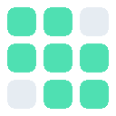

TScrambler
Unscrambles tiled Twitch streams in your browser. Streamers scramble theirs in OBS.
1Install
Also Brave and Opera
- Download for Chromethen unzip it.
- Go to
chrome://extensions(Edge:edge://extensions) and turn on Developer mode. - Click Load unpacked and pick the unzipped folder.
- Download for Firefoxno need to unzip it.
- Go to
about:debugging#/runtime/this-firefox. - Click Load Temporary Add-on and pick the zip.
Firefox removes it when you close the browser. To keep it, use the userscript.
Any browser
- Add Violentmonkey for Firefox, Chrome or Edge.
- Install userscriptthen click Install.
Chrome or Edge: open Violentmonkey's Details and turn on Allow user scripts.
2Watch
Open the stream. The picture clears up after a few seconds.
Got a link from the streamer? Open it once and click OK.
Shortcuts
| Alt Shift S | On or off for this channel |
| Alt Shift R | Show the scrambled picture |
| Alt Shift H | Status panel |
Not working?
| Still tiles | Ask the streamer for their link. |
| Choppy | Pick Source quality, turn on hardware acceleration. |
| Anything else | Press Alt Shift H to see what's wrong. |
1Install
Download for OBSRun it, then restart OBS.
Windows, OBS 31 or newer.
2Scenes
- Show: your usual scene with everything in it.
- Broadcast: a new scene with only Show in it, full size.
- In Broadcast, right-click Show, Filters, add TScrambler: Scramble.
- Stream the Broadcast scene.
Don't add anything else to Broadcast. Viewers would see it garbled.
3Code
Patterns
| Pattern | Layout | Stream quality |
|---|---|---|
| Squares | 16×9 squares | Good |
| Mixed grid | Uneven rows and columns | Good |
| Bricks | Offset rows | Good |
| Vertical stripes | 16 columns | Better |
| Horizontal stripes | 9 rows | Better |
| Big blocks | 8×5 blocks | Better |
| Giant blocks | 4×3 blocks | Best |
Bigger pieces look better on stream but are easier to undo by eye.
Options
| Mirror tiles | Flips some tiles |
| Rotate tiles | Turns some tiles |
| Swap colors | Recolors some tiles, costs a little quality |
| Change every N min | New layout, same code. 0 is off. |
4Check
Make a scene with Broadcast in it and add TScrambler: Descramble (verify) with your code. It should look like Show.
Switch away from it while live. It uses GPU time.
5OBS settings
| Video | 1920×1080, 24 NTSC FPS |
| Output | NVENC H.264, CBR 6000 kbps, keyframes 2 s |
| Encoder | Preset P7, High Quality, Two Passes |
| Advanced | NV12, Rec. 709, Limited range |
| Twitch | Latency mode Normal |